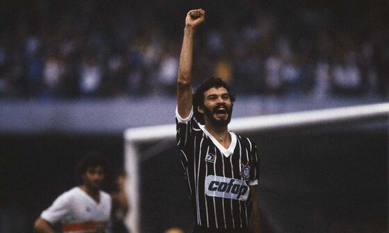

Ele provavelmente é mais conhecido por ser o autor da famosa série Dragon Ball. Essa série é conhecida como um
dos eixos ao lado de Hokuto no Ken para o que foi conhecido como "a Era Dourada da Jump". Seu sucesso "forçou"
Toriyama a trabalhar em Dragon Ball de 1984 a 1995. Durante esse período de onze anos, ele produziu 42 volumes. Cada
volume tem uma média de 200 páginas, de maneira que toda trama de Dragon Ball se estende por quase 10 000 páginas.
Além disso, o sucesso de Dragon Ball levou a uma série de anime para televisão, filmes de longa-metragem, Video
games, e um mega-merchandising.

Como futebolista, Sócrates atuou como meio-campista e era considerado um dos grandes craques do futebol brasileiro
na década de 1980. É um dos maiores ídolos do Corinthians ao lado de Luisinho, Cláudio, Rivellino, Marcelinho
Carioca, Neto, Baltazar e Cássio e do Botafogo de Ribeirão Preto, ao lado de Zé Mario e do seu irmão Raí. Defendeu a
Seleção Brasileira entre 1979 e 1986, sendo capitão da Amarelinha na Copa do Mundo FIFA de 1982
Notabilizou-se também por seu ativismo político, particularmente na década de 1980, quando liderou um movimento pela
democratização do futebol e participou do movimento pelas Diretas Já

Grande vencedor no futebol, dentro e fora de campo, detém o recorde de títulos das Copas do Mundo FIFA em
geral. Já vitorioso como jogador nas edições de 1958 e 1962, Zagallo sagrou-se campeão da competição como treinador
em 1970, sendo um dos três a conquistar a Copa como jogador e como treinador, e depois como coordenador técnico, em
1994, totalizando quatro conquistas em três funções diferentes.Conhecido como "Velho Lobo", ainda treinou a Seleção
Brasileira em 1974 e 1998, obtendo o vice-campeonato neste último, e foi novamente coordenador técnico da equipe em
2006, compondo a comissão técnica de Carlos Alberto Parreira, reeditando a parceria de 1994, desta vez sem sucesso.
No total foram cinco finais em sete participações nas Copas do Mundo.

Diego Armando Maradona Franco foi um futebolista argentino que atuou como meia-atacante. Considerado um dos maiores
jogadores de todos os tempos, liderou a Argentina na conquista da Copa do Mundo FIFA de 1986, marcando, nas
quartas-de-final, o Gol do Século.
Hendrik Johannes "Johan" Cruijff foi um treinador e futebolista neerlandês que atuou como atacante. É considerado
pela IFFHS como o melhor futebolista europeu do século XX e um dos maiores jogadores da história do futebol.

Pelé começou a jogar pelo Santos Futebol Clube aos quinze anos de idade, e pela Seleção Brasileira aos
dezesseis. Durante sua carreira na Amarelinha, sagrou-se campeão de três edições da Copa do Mundo FIFA: 1958, 1962 e
1970, sendo o único a fazê-lo como jogador. Contando os gols oficiais, Pelé é, ao lado de Neymar, o maior goleador
da história da Seleção Brasileira, com 77 gols em 92 jogos. Em clubes, ele é o maior artilheiro da história do
Santos e os levou a várias conquistas, com destaque para duas Copas Libertadores da América e dois Mundiais
Interclubes, vencidos em 1962 e 1963. Conhecido por conectar a frase "jogo bonito" ao futebol, a "ação eletrizante e
a propensão a objetivos espetaculares" de Pelé fizeram dele uma estrela rapidamente, e sua equipe fez turnês
internacionais, a fim de aproveitar ao máximo sua popularidade. Após se aposentar em 1977, tornou-se embaixador
mundial do futebol e fez muitos trabalhos de atuação e comerciais.

Gerhard "Gerd" Müller foi um futebolista alemão que atuou como centroavante. É amplamente considerado o maior
centroavante da história do futebol europeu, e um dos maiores do futebol mundial. Seu diferencial era a sua explosão
e velocidade de movimentos em pequenos espaços e seu chute potente e preciso.

Eusébio da Silva Ferreira foi um futebolista português nascido na então Província Ultramarina de Moçambique durante
a época colonial. É considerado um dos melhores futebolistas de todos os tempos pela Federação Internacional de
História e Estatísticas do Futebol, especialistas e fãs.

Alfredo Stéfano Di Stéfano Laulhé foi um futebolista e treinador argentino-espanhol de origem italiana que atuava
como
atacante. Além de ter jogado pela Seleção Argentina, jogou também pela Seleção Espanhola. É considerado um dos
maiores
futebolistas da história.

Foi contratado pelo clube Corinthians para o Campeonato Paulista de 2008 e a Série B daquele ano, sendo um dos
destaques
da equipe em ambas as competições. Chegou à final da Copa do Brasil de 2008 e ficou com o vice-campeonato. Em 8 de
novembro conquistou o título da Série B pelo Corinthians. Em 2009, conquistou o Campeonato Paulista e a Copa do
Brasil,
no ano de 2011 conquistou Campeonato Brasileiro atuando a maior parte da competição como titular, porém perdendo a
sua
condição de titular ao longo da competição para o zagueiro Paulo André. No início de 2012 após uma contusão do então
titular Paulo André, Chicão retornou ao time titular, e tem sido novamente um dos líderes do elenco.